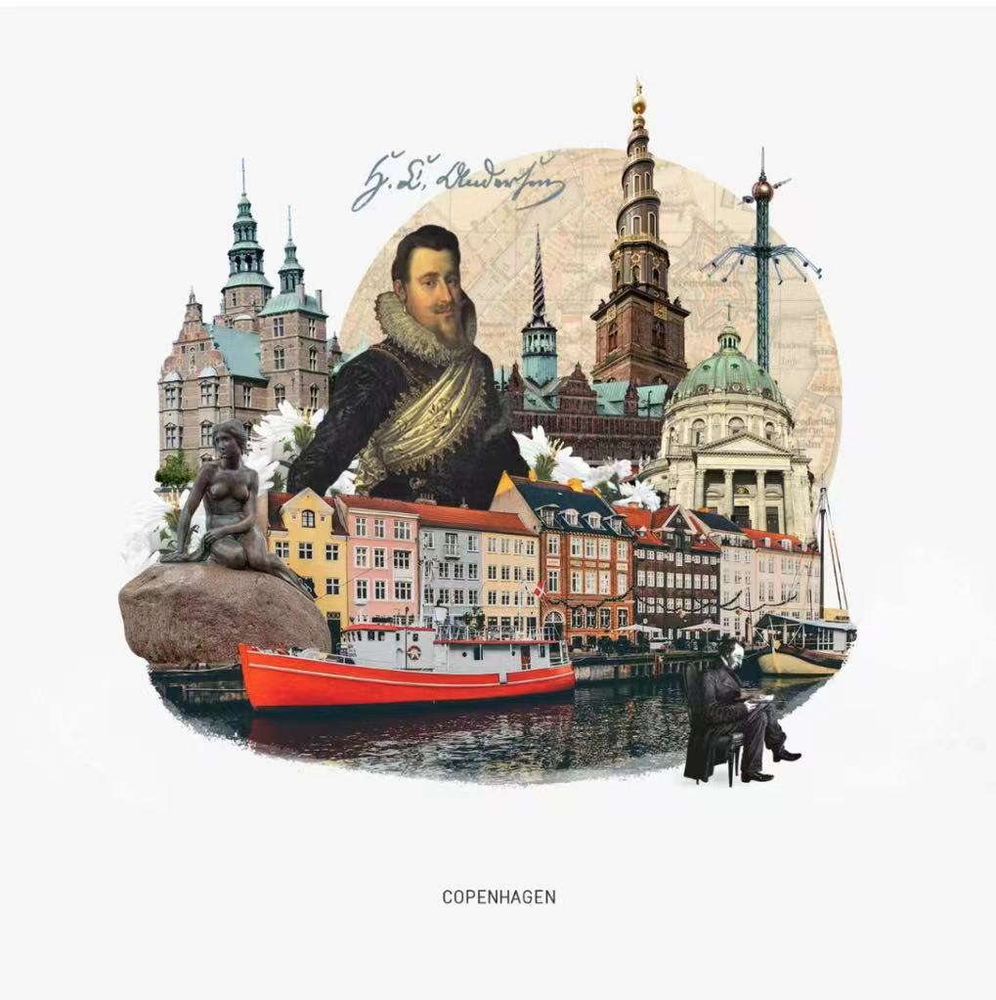

Urban Collage
UK Urban Collage
French Urban Collage

Denmark Urban Collage
Urban collages can show the diversity of a city by combining different images, symbols, colours and textures. It can also reflect the historical continuity and cultural diversity of a city.